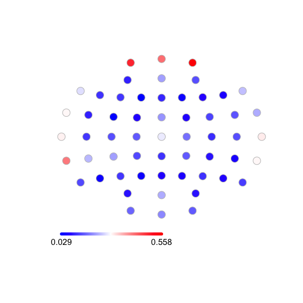
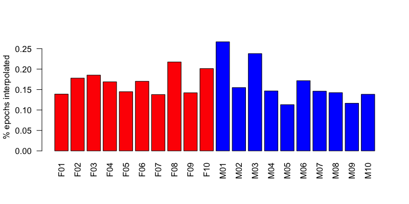
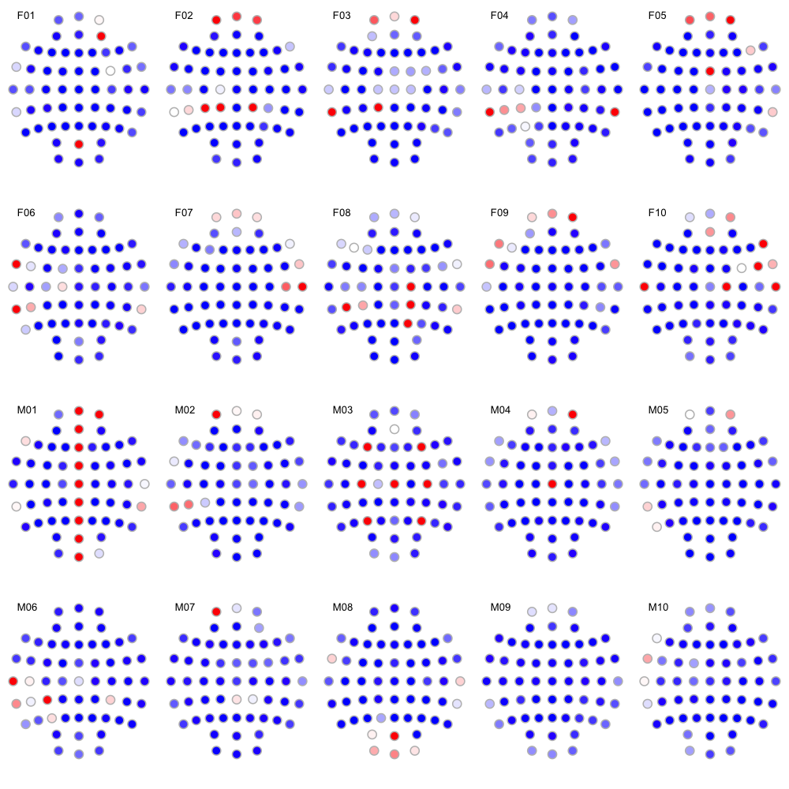

4.2. EEG interpolation
We'll populate the work/clean folder with (hopefully!)
analysis-ready EDFs, after this final interpolation step. See this
vignette for an
overview of the logic of QC with
CHEP-MASK/CHEP/MASK/INTERPOLATE commands.
Luna implements a spherical-spline interpolation method. Typically, interpolation works, epoch-by-epoch, to interpolate epoch/channel combinations that have been flagged as likely artifact by automated procedures.
QC for limited montage EEG studies
Naturally, if we were instead working with limited montage EEG studies (e.g. from PSG), then interpolation would not be an issue. As such, we'd skip this step and simply move to epoch-level QC prior to specific analyses. Inasmuch as it is desirable to have a squared-off dataset, with all channels having the same set of epochs, hd-EEG datasets necessitate approaches such as QC to achieve this goal; this is less of a concern of limited montage studies.
Forcing specific channels
When we know, a priori or based on other
analyses, that a channel is bad, we can instruct the interpolation
method to interpolate it no matter what. To aid this step, given the
observations made in prior QC steps, we've created a file
aux/badchs.txt which is a vars (individual-variable) format file
that defines a variable ${badchs} for each individual,
i.e. reflecting the above three observations.
cat work/data/aux/badchs.txt
ID badch
F01 .
F02 .
F03 .
F04 .
F05 .
F06 .
F07 .
F08 .
F09 .
F10 .
M01 AFZ,FZ,FCZ,CZ,CPZ,PZ,POz,OZ,FPZ
M02 .
M03 CZ,C3,C4,F3,F4,P3,P4
M04 CZ
M05 .
M06 .
M07 .
M08 .
M09 .
M10 .
In the above file, we've added . values for individuals with no
channels to drop in the above, as the variable needs to be defined for
all individuals. In the script before,
CHEP bad-channels=${badch}
will evaluate to
CHEP bad-channels=.
.).
Running interpolation
This step performs of series of scans looking for outliers -- either
by epoch or by channel -- and then performs interpolation
epoch-by-epoch. In some cases entire channels are dropped for all
epochs. The core command below is INTERPOLATE. By default, it uses
internal (64-channel) sensor map. If you have more or
differently-positioned sensors, you can directly attach channel
locations via the
CLOCS command
first.
This step will take several minutes to complete: so as not to overwrite
it, we'll call the output int-out.db. It will write a new set of
EDFs to work/clean. It will also output epoch-level Hjorth
statistics pre- and post-interpolation.
luna harm2.lst vars=orig/aux/badchs.txt \
-o int-out.db \
-s ' SIGNALS drop=A1,A2
TAG INTERPOLATE/0
SIGSTATS epoch
TAG .
CHEP-MASK ch-th=3
CHEP bad-channels=${badch} channels=0.3
CHEP-MASK ch-th=2
CHEP bad-channels=${badch} dump
INTERPOLATE
TAG INTERPOLATE/1
SIGSTATS epoch
WRITE edf-dir=work/clean '
We can review the generated output from INTERPOLATE:
destrat int-out.db +INTERPOLATE
ID NCHEP_INTERPOLATED NE_INTERPOLATED NE_MASKED NE_NONE
F01 6673 843 0 0
F02 8733 861 0 0
F03 9189 870 0 0
F04 8443 877 0 0
F05 7388 896 0 0
F06 7927 817 0 0
F07 7412 944 0 0
F08 10434 842 0 0
F09 6307 779 0 0
F10 10564 921 0 0
M01 13316 876 0 0
M02 7805 885 0 0
M03 12721 938 0 0
M04 7947 951 0 0
M05 6014 933 0 0
M06 8935 913 0 0
M07 8303 998 0 0
M08 7963 982 0 0
M09 6487 976 0 1
M10 7026 891 0 0
To obtain a more granular picture of what was interpolated for whom, we can pull the channel-level outputs:
destrat int-out.db +INTERPOLATE -r CH > o.chs
Loading these data into R:
d <- read.table( "o.chs" , header=T, stringsAsFactors=F)
library(luna)
First, summarizing by channel: here we plot the average percent of epochs flagged and then interpolated:
dc <- tapply( d$PCT_INTERPOLATED , d$CH , mean )
ltopo.rb( names(dc) , dc , zeroed=F , show.leg=T, sz=2)

Frontopolar and temporal channels are particularly prone to artifact and thus interpolation. We can tabulate the same information depicted above:
cbind(sort(dc, decreasing=T) )
Fp2 Fp1 FPZ TP7 T8 T7 FT7
0.55837264 0.49355039 0.41932952 0.41198287 0.31164829 0.30672167 0.29958038
TP8 CZ F7 F8 CP5 FT8 POz
0.29647388 0.27731058 0.26892996 0.24022931 0.23314956 0.22601227 0.22344106
CP3 AFZ FCZ OZ C2 O1 CP2
0.21682390 0.21214005 0.20529878 0.19280673 0.17391582 0.15878867 0.15209290
O2 C1 FC6 AF4 C3 C6 CP1
0.15131115 0.15109263 0.14621647 0.14032227 0.13980163 0.13854846 0.13751657
P7 FC4 P8 F3 C5 P3 F5
0.13551774 0.13196309 0.12465140 0.12073521 0.11834359 0.11696603 0.11556481
CPZ P4 C4 FZ AF3 FC5 PO3
0.11490587 0.11362248 0.10890102 0.10216490 0.10038775 0.09910836 0.08815335
CP4 PO4 F4 PZ FC2 FC1 P6
0.08700970 0.08514355 0.07997645 0.07926446 0.07661015 0.07604957 0.07504070
P2 F6 CP6 P5 F2 P1 FC3
0.07287504 0.07081249 0.06394192 0.05137664 0.05108995 0.04973998 0.03417183
F1
0.02903031
Next, summarizing by individual:
di <- tapply( d$PCT_INTERPOLATED , d$I , mean )
barplot( di , names.arg = names(di) ,
col = rep(c("red","blue"),each=10) ,
las=2, ylab="% epochs interpolated")

Combining these viewsw, we can also generate topo-plots of interpolation rates per individual:
par(mfrow=c(4,5) , mar=c(0,0,0,0) )
for (id in ids ) {
di <- d[ d$ID == id , ]
ltopo.rb( di$CH , di$PCT_INTERPOLATED ,
zeroed = F , mt = id , zlim = c(0,1) , sz=1.5)
}

Here we see the expected consequences of the
manipulations for M01 (all
midline channels are flat) and M03 (six central and frontal channels
duplicated, as thus listed in badchs.txt).
Finally, a number of channels have been comletely interpolated
(including the ones specified in badchs.txt):
d[ d$PCT_INTERPOLATED == 1 , ]
ID CH NE_INTERPOLATED PCT_INTERPOLATED
4 F01 AF4 843 1
55 F01 POz 843 1
58 F02 Fp1 861 1
88 F02 CP3 861 1
89 F02 CP1 861 1
90 F02 CP2 861 1
116 F03 Fp2 870 1
143 F03 TP7 870 1
146 F03 CP1 870 1
200 F04 TP7 877 1
207 F04 TP8 877 1
230 F05 Fp2 896 1
279 F05 FCZ 896 1
298 F06 FT7 817 1
314 F06 TP7 817 1
370 F07 T8 944 1
424 F08 C2 842 1
429 F08 CP5 842 1
432 F08 CP2 842 1
440 F08 P2 842 1
458 F09 Fp2 779 1
525 F10 F8 921 1
532 F10 FC6 921 1
534 F10 T7 921 1
538 F10 C2 921 1
541 F10 T8 921 1
572 M01 Fp2 876 1
619 M01 AFZ 876 1
620 M01 FZ 876 1
621 M01 FCZ 876 1
622 M01 CZ 876 1
623 M01 CPZ 876 1
624 M01 PZ 876 1
625 M01 POz 876 1
626 M01 OZ 876 1
627 M01 FPZ 876 1
628 M02 Fp1 885 1
691 M03 F3 938 1
694 M03 F4 938 1
707 M03 C3 938 1
710 M03 C4 938 1
723 M03 P3 938 1
726 M03 P4 938 1
736 M03 CZ 938 1
743 M04 Fp2 951 1
793 M04 CZ 951 1
876 M06 T7 913 1
886 M06 CP3 913 1
913 M07 Fp1 998 1
1024 M08 POz 982 1
Building the new project
The new set of interpolated EDF is in the folder work/clean/. We'll
now add the annotations to this folder also. (Again, it is not a
prerequisute that all files belong in the same folder, nor it is
necessarily best practice: it is simply the procedure adopted in this
walkthrough.)
cp work/harm2/*.annot work/clean/
Finally, we'll build a new clean sample list c.lst, which will be
the basis for most of the analysis steps of this
walkthrough.
luna --build work/clean > c.lst
We'll next generate Hjorth plots on the data, pre- and post-interpolation.